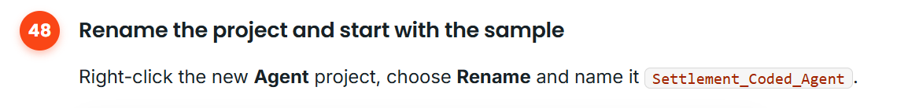
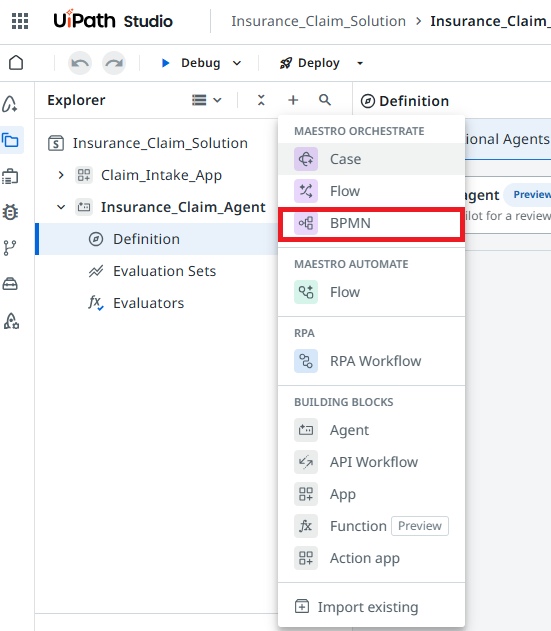
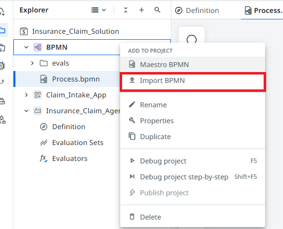
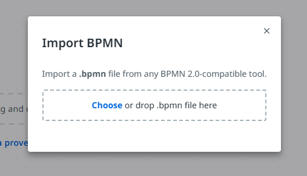
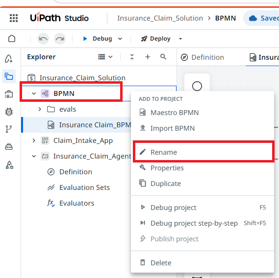
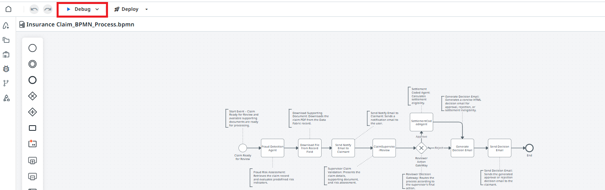
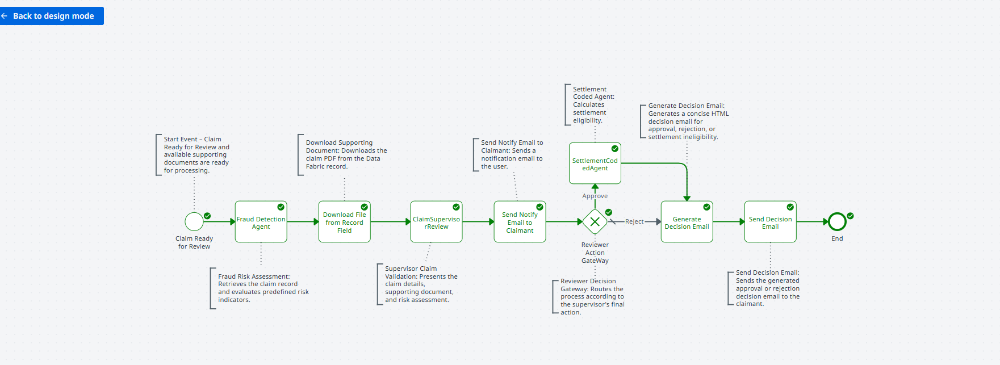

Import the BPMN File
The Maestro BPMN process ties everything together: it starts when a claim is ready for review, calls the Fraud Detect Agent, downloads the claim document, sends the claim to a supervisor, branches on the decision, runs the Settlement Coded Agent and sends the emails. You add it to the same Insurance_Claim_Solution by importing a ready-made BPMN file.

Insurance_Claim_Agent and Claim_Intake_App from the previous lessons. Check that the IntakeClaimEntity entity exists in Data Fabric and that the ClaimSupervisorReview action app is available on the tenant (you will import it, not build it). You build the Fraud Detect Agent and the Settlement Coded Agent later, right before the tasks that use them.Add a BPMN project to the solution
In the Explorer of Insurance_Claim_Solution click + and choose BPMN under Maestro Orchestrate.

Insurance_Claim_Solution.Download and import the BPMN file
Download the ready-made process file:
In the Explorer right-click the new BPMN project and choose Import BPMN.

In the Import BPMN dialog click Choose (or drop the file) and select Insurance_Claim_BPMN_Process.bpmn.

Insurance_Claim_BPMN_Process.bpmn.Rename the BPMN project
Right-click the BPMN project, choose Rename and name it Insurance_Claim_MAESTRO. You can delete the empty default Process.bpmn if it is still there.

Insurance_Claim_MAESTRO.IntakeClaimEntity entity) → build the Fraud Detect Agent and wire the Fraud Detection Agent task → Download File from Record Field → ClaimSupervisorReview → Send Notify Email to Claimant → Reviewer Action Gateway → Settlement Coded Agent → Generate Decision Email → Send Decision Email → debug and deploy the solution.Debug the imported process
Open the imported Insurance Claim_BPMN_Process.bpmn and click Debug in the toolbar.

Watch the run on the canvas. Every element turns green with a check mark when it completes and the Execution trail lists each step. A clean run from Claim Ready for Review to End confirms the file imported without errors.
